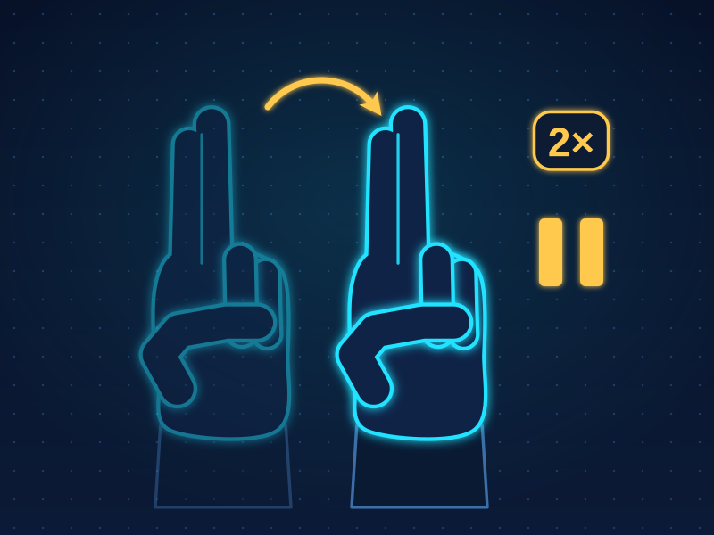
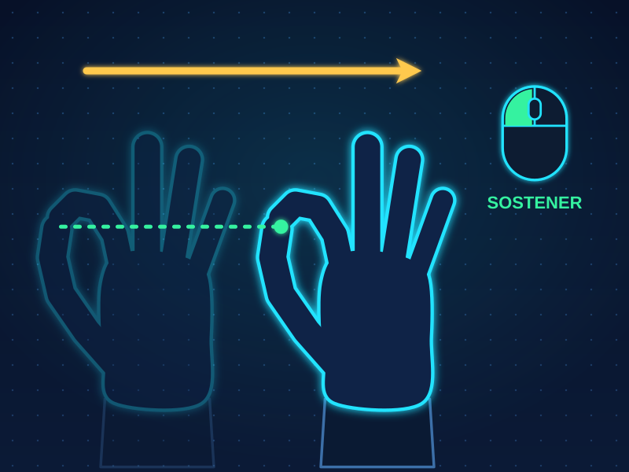
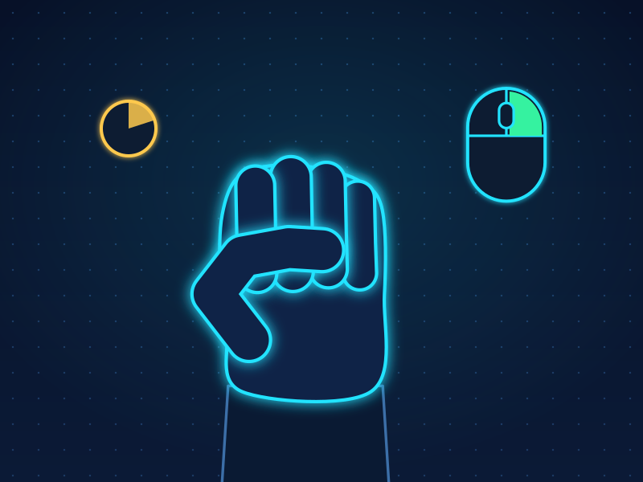
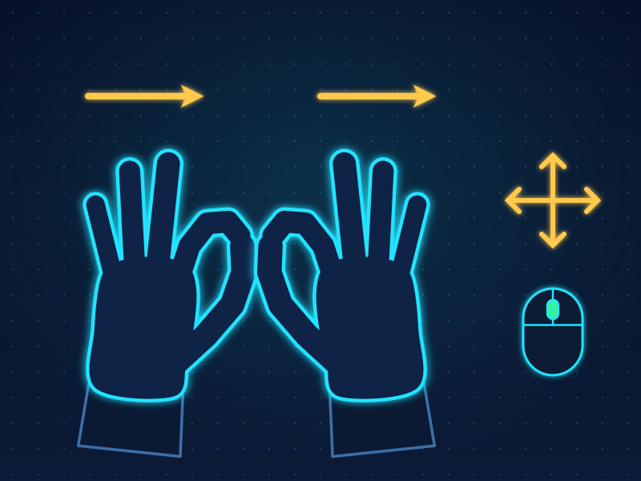
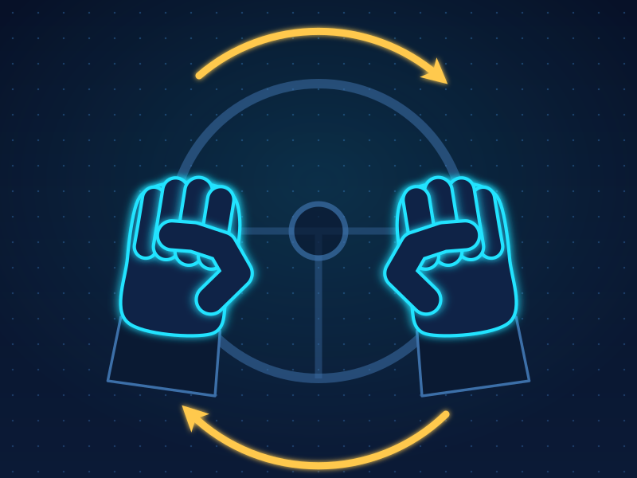
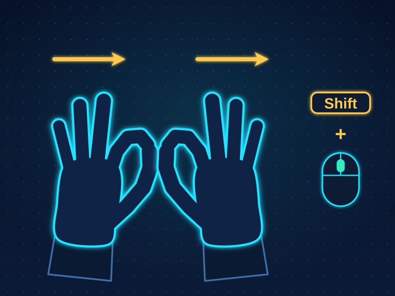

Maneje el ratón con gestos de las manos frente a la cámara del portátil. Para dibujar en 2D y girar modelos en 3D.
Versión 1.0.0 · Windows 64 bits
01
Qué es y para qué sirve
Lycan Mouse Control mira sus manos con la cámara del portátil y mueve el puntero por usted. Con señas sencillas hace clic, arrastra, acerca y aleja el dibujo, y gira modelos en 3D.
Está pensado para diseño: EDWIN CNC CAD-CAM y LibreCAD en 2D, y EDWIN CNC 3D, SketchUp, FreeCAD y Blender en 3D.
Girar modelos
Agarre el modelo con las dos manos, como un volante, y gírelo.
Presentar
Muestre un diseño al cliente sin acercarse al teclado.
Descansar la mano
Alterne con el ratón para no cansar siempre la misma mano.
ImportanteEs un complemento del ratón, no lo reemplaza. Para marcar puntos exactos, use el zoom y el enganche (las ayudas para pegarse a puntos) del programa de dibujo.
02
Video tutorial
Vea las señas en acción antes de empezar.
Video tutorialLycan Mouse Control paso a paso
03
Requisitos
Windows
Windows 10 u 11 de 64 bits.
Cámara
La del portátil sirve. También una cámara web por USB.
Equipo
No necesita tarjeta de video. Funciona en un portátil común.
Luz
Una lámpara frente a usted. Evite tener una ventana detrás.
Ábralo con doble clic. No pide permisos de administrador.
Si quiere, marque crear un ícono en el escritorio o abrir al encender el computador.
Al terminar, abra Lycan Mouse Control desde el menú Inicio o el escritorio.
Si Windows lo detienePuede salir un aviso azul que dice «Windows protegió su PC» (SmartScreen). Sale porque el programa es nuevo y todavía pocas personas lo han descargado.
Haga clic en «Más información» y luego en «Ejecutar de todas formas».
Si más adelante lo desinstala, el programa le pregunta si quiere borrar su configuración. Si dice que no, la conserva para la próxima vez.
05
La primera vez
La primera vez se abre un asistente que le enseña las señas paso a paso. Mientras practica, el ratón no hace nada. Puede saltar cualquier paso.
Prepare la luz. Encienda una lámpara frente a usted, no detrás. Si hay una ventana a su espalda, la cámara ve la mano oscura.
Acomódese. Apoye el codo en la mesa. Ponga la mano a unos 40 a 60 cm de la cámara, con la palma hacia la pantalla.
Escoja su mano: derecha o izquierda. Con ella moverá el puntero.
Ajuste a su mano (unos 40 segundos): el programa le pide abrir la mano, cerrar el puño y hacer cada seña. Así aprende cómo son sus manos.
Practique activar, mover, hacer clic, clic derecho, acercar y alejar, y pausar. Si escogió 3D, también girar, mover y soltar el modelo.
Arranca en pausaCada vez que lo abre, el programa empieza en pausa: sus manos no mueven nada hasta que usted haga la seña de activar. Así no hace clics por accidente.
Puede volver al asistente cuando quiera desde el menú ? ▸ Volver a practicar señas. En ese mismo menú está la chuleta de señas, un resumen para tener a la vista.
06
Señas de Mouse Control 2D
Los dibujos muestran la mano derecha como usted la ve en la pantalla, en espejo. Con la mano izquierda es igual, al revés.
Activar
Dos dedos juntos
Estando en pausa, estire el índice y el corazón bien pegados, como diciendo «dos». Doble los otros dedos. Sosténgala un momento (un cuarto de segundo).

Pausar y soltar todo
Dos dedos juntos, dos veces
Estando activo, haga la misma seña dos veces seguidas, rápido (en menos de un segundo). Pausar es como levantar el ratón para reacomodarlo.
Mover el puntero
Dedo índice
El puntero sigue la punta del índice. Funciona como un espejo: si mueve la mano a la derecha, el puntero va a la derecha. El programa quita el temblor.
Clic izquierdo
Pellizco pulgar + índice
Junte la punta del pulgar con la del índice y suéltelas. El clic cae donde estaba el puntero justo antes de cerrar los dedos, para que no se corra.

Arrastrar
Pellizco sostenido y mover
Junte pulgar e índice y, sin soltarlos, mueva la mano. Abra los dedos para soltar. Sirve para mover piezas o hacer una ventana de selección.
Doble clic
Dos pellizcos rápidos
Haga el pellizco dos veces seguidas, rápido, sin mover la mano.

Clic derecho
Puño cerrado
Cierre la mano en puño un momento (un quinto de segundo) y ábrala. Deje el pulgar por encima de los dedos.
Acercar / alejar
Dos manos en pellizco: separar o juntar
Haga pellizco con las dos manos. Sepárelas para acercar el dibujo y júntelas para alejarlo. Es como mover la rueda del ratón, sin pasarse de velocidad.

Mover el dibujo
Dos manos en pellizco movidas juntas
Haga pellizco con las dos manos y muévalas juntas, sin cambiar la distancia entre ellas. El dibujo se desplaza, como con el botón del medio del ratón.
Opcional · viene apagada
Zoom con una mano
Junte el pulgar con el corazón y suba la mano para acercar o bájela para alejar. Para usarla, actívela en ⚙ Opciones ▸ Señas ▸ Zoom con una mano.
Soltar todo
Sacar la mano
Si la cámara deja de ver su mano, el programa suelta todos los botones casi de inmediato. Si pasan 10 segundos sin ver manos, se pone en pausa solo.
07
Señas de Mouse Control 3D
En 3D sirven todas las señas de 2D, más estas. Cambie entre 2D y 3D con Ctrl+Alt+D o con el botón 2D/3D de la ventana. Al cambiar, queda en pausa.

Girar el modelo
Dos puños, como un volante
Cierre las dos manos como si agarrara un volante y gírelas. También puede subirlas y bajarlas juntas. El modelo gira como con el botón del medio sostenido.
Soltar
Abrir las manos
Para dejar de girar o de mover, abra las manos. Se suelta todo.

Mover el modelo
Dos manos en pellizco movidas juntas
Igual que mover el dibujo en 2D. En 3D el programa usa Shift + botón del medio (o lo que pida su programa de dibujo).
Clic derecho
Puño con una sola mano
En 3D el puño de una mano espera un poco más (medio segundo) antes del clic derecho. Así no se confunde con el agarre de las dos manos.
08
Atajos de teclado
Funcionan aunque tenga otro programa al frente. Puede cambiarlos en ⚙ Opciones ▸ Atajos.
Atajo
Qué hace
Ctrl+Alt+M
Pausar o activar.
Ctrl+Alt+X
Salir del programa (antes suelta todo).
Ctrl+Alt+O
Mostrar u ocultar la ventana.
Ctrl+Alt+D
Cambiar entre 2D y 3D (queda en pausa).
Ctrl+Alt+P
Modo dibujo fino: el puntero se mueve más suave.
Teclado latinoamericanoNo se usa Ctrl+Alt+Q porque en este teclado escribe «@». Al abrir, el programa revisa que ningún atajo escriba una letra o un símbolo en su teclado. Si alguno lo hace, no lo usa y le avisa.
09
Programas que reconoce
Cada programa de dibujo usa botones distintos para girar y mover la vista. Lycan Mouse Control se da cuenta solo de cuál programa tiene al frente y usa la combinación correcta. Usted hace siempre las mismas señas.
Programa
Girar
Mover
Acercar / alejar
EDWIN CNC 3D
Botón del medio
Shift + medio
Suave, de a poquitos
SketchUp
Botón del medio
Shift + medio
Normal
FreeCAD (estilo CAD)
Medio + izquierdo
Botón del medio
Normal
FreeCAD (estilo Blender)
Botón del medio
Shift + medio
Normal
Blender
Botón del medio
Shift + medio
Normal
EDWIN CNC CAD-CAM y LibreCAD
—
Botón del medio
Pasos completos, máximo 8 por segundo
Cualquier otro (genérico)
Botón del medio
Medio en 2D, Shift + medio en 3D
Normal
FreeCADFunciona mejor con el estilo «Blender»: en FreeCAD vaya a Editar ▸ Preferencias ▸ Visualización ▸ Navegación y escoja «Blender». Lycan Mouse Control nota ese cambio solo.
Si abre un programa 3D estando en 2D, el programa le sugiere pasar a 3D. También puede escoger el programa a mano en ⚙ Opciones ▸ General ▸ Programa.
10
Seguridad: nada queda presionado
Si la cámara pierde su mano, si pausa, si cambia de modo o de programa, si sale, o si algo falla: el programa suelta siempre todos los botones y las teclas Shift, Ctrl y Alt.
Con el puntero encima de la ventana de Lycan Mouse Control no se hacen clics.
Si el programa que tiene al frente se abrió como administrador, Windows no deja que otro programa lo maneje. Lycan Mouse Control queda en espera y le avisa. Para manejarlo con gestos, use el menú ? ▸ Reiniciar como administrador.
Después de 20 minutos seguidos le recuerda bajar los brazos y descansar un minuto.
Si algo quedó presionadoPor ejemplo, si cerró el programa a la fuerza: presione y suelte la tecla Shift y el botón de la rueda del ratón.
11
Problemas frecuentes
La cámara no abre o sale «Sin imagen de la cámara»
Casi siempre es porque otro programa la está usando: Zoom, Teams, Meet o la app Cámara. Ciérrelo y espere unos segundos. Si tiene varias cámaras, escoja la correcta en ⚙ Opciones ▸ General ▸ Cámara.
El puntero tiembla
Active el modo dibujo fino con Ctrl+Alt+P.
Ponga más luz frente a usted.
Apoye el codo en la mesa y mueva solo la muñeca.
En ⚙ Opciones ▸ Puntero, mueva la barra hacia «Más estable».
El clic se corre de donde apuntaba
Deje la mano quieta un instante antes de cerrar los dedos y haga el pellizco sin mover la muñeca. El programa ya pone el clic donde apuntaba justo antes. Para puntos exactos, acerque el dibujo con el zoom y use el enganche del programa de dibujo.
No reconoce la seña
Revise que esté activo: si dice PAUSADO, haga la seña de activar.
Marque bien la seña: para activar, índice y corazón bien pegados; para el clic, que las puntas se toquen; para el puño, todos los dedos cerrados.
La mano a 40 a 60 cm de la cámara, con la palma hacia la pantalla.
La seña de activar sostenida más de un segundo y medio no cuenta: hágala y suéltela.
Repita el ajuste a su mano en ? ▸ Volver a practicar señas.
Se pausa solo
Pasa cuando la cámara no ve ninguna mano por 10 segundos. Es para que no haga clics si usted se para. Haga la seña de activar para seguir.
Dice «En espera»
El programa que tiene al frente se abrió como administrador. Use el menú ? ▸ Reiniciar como administrador, o abra su programa de dibujo de forma normal.
Mi programa de dibujo no gira o no mueve bien
Revise en ⚙ Opciones ▸ General ▸ Programa que diga «Automático», o escoja su programa de la lista. En FreeCAD, use el estilo de navegación «Blender».
12
Privacidad
Lycan Mouse Control no guarda ni envía imágenes de la cámara. Las mira en el momento y las descarta.
Todo pasa dentro de su computador. No necesita internet para funcionar.
Solo guarda sus opciones y el ajuste de su mano en %APPDATA%\Lycan Mouse Control\config.json. Si ese archivo se daña, el programa lo aparta y usa los valores de fábrica.
Si algo falla, lo anota en un registro de texto, sin imágenes. Lo abre desde el menú ? ▸ Abrir carpeta de registros.